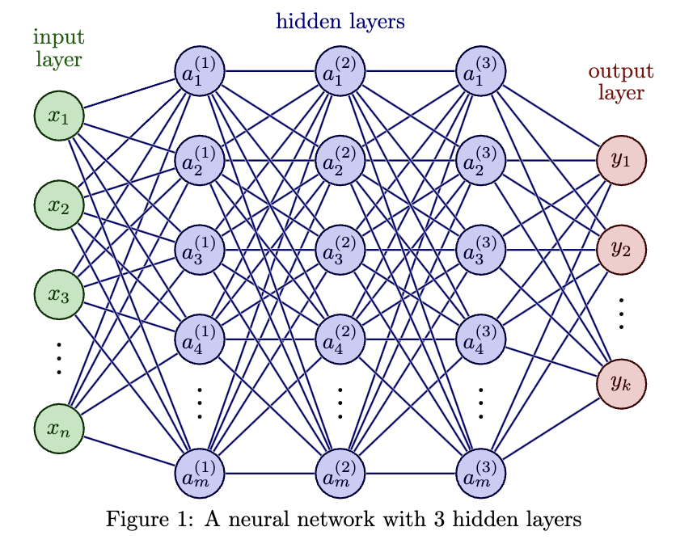

Neural Networks
Project 2
What is Machine learning/Deep learning
Machine learning is fundamentally about exploiting patterns in data.
Deep learning is a branch of ML which opts for huge expressive power, but losing almost all interpretability in the process.
For this project we will be exploring neural networks, mathematical structures which can (approximately) represent any function. Neural networks allow us to discover complex patterns in data that other models might not be able to predict.
Introduction
We plan on illustrating the predictive power and flexibility of Neural Networks on data with complex relationships.
- We decided to focus on classification tasks, with applications in clustering and computer vision.
Research Question:
How accurately can a simple neural network classify points with their correct clusters?
What are the benefits of using a neural network over other algorithms?
The Data
To illustrate the power and flexibility of neural networks, we created multiple datasets with complex relationships.
Each dataset contains two continuous predictor variables
xandy, and one categorical response variablelabelwith factorsaandb.Two continuous predictors allow us to visualize the relationships between these predictors easily, giving us an intuitive understand of what the underlying relationship might be
The Data
- Despite the intuitive nature of the relationships, modeling them is quite difficult using tools that we’ve learned about so far in this class
What is a Neural Network?
a machine learning algorithm modeled on the human brain and nervous system (hence NEURAL network)
contains a network of nodes, organized into layers, each of which can be thought of as its own linear regression model
- analogously, the ‘weights’ associated to a node can be viewed as slope coefficients and ‘biases’ can be viewed as the intercept terms
- weights and biases are assigned randomly, then iteratively changed to reduce training error
each additional node allows for a different linear relationships… adding more ‘layers’ of nodes allows for more flexible, non-linear relationships
similar to decision trees, one can think of neural networks as ‘partitioning’ the predictor space
What is a Neural Network?

Training Neural Networks
Training neural network involves
Training/testing split
Specifying the architecture of your neural network
How many layers?
How many nodes?
Training rate?
Epochs?
Testing Neural Networks
Testing a neural network in the context of classification tasks involves
Use the model to make predictions on the test data
Compare the predictions to the true values
Overall accuracy?
Specificity?
Sensitivity?
Gauss Model
library(neuralnet)
model1 <- neuralnet(
label~x+y,
data=train1,
hidden=c(5,5),
linear.output=FALSE) prediction_label
a b
a 113 0
b 0 87# A tibble: 1 × 1
accuracy
<dbl>
1 100
X Model
library(neuralnet)
model2 <- neuralnet(
label~x+y,
data=train2,
hidden=c(5,5),
linear.output=FALSE) prediction_label
a b
a 99 0
b 0 101# A tibble: 1 × 1
accuracy
<dbl>
1 100
XY Model
library(neuralnet)
model3 <- neuralnet(
label~x+y,
data=train3,
hidden=c(5,5),
linear.output=FALSE) prediction_label
a b
a 104 1
b 3 92# A tibble: 1 × 1
accuracy
<dbl>
1 98Spiral Model
library(neuralnet)
model4 <- neuralnet(
label~x + y,
data=train4,
hidden=c(8,8), #two hidden layers with 8 nodes each
linear.output=FALSE,
learningrate=0.001,
stepmax=1e+06
) prediction_label
a b
a 94 3
b 8 95# A tibble: 1 × 1
accuracy
<dbl>
1 94.5Conclusion
Neural Networks are extremely powerful, especially in the context of classification
Neural Networks are significantly more flexible but also limiting than other algorithms:
- Compared to traditional models such as decision trees and linear regression, neural networks provided enhanced accuracy and flexibility, handling non-linear data relationships more effectively
The ‘black box’ nature of deep learning models can impede interpretability and trustworthiness
Where to go from here?
Neural Networks are great for image classification (CNN’s) and object detection.
Self driving with reinforcmenet learning
Neural networks are pivotal in natureal langauge processing for tasks like translation, sentiment analysis, and chatbots
Generate AI’s that can play and excel at complex games, such as Chess and Go (AlphaGo 2016)
Cybersecurity and fraud detection (pattern recognition)